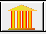
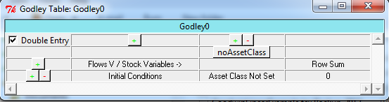
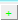
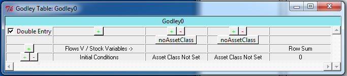
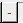
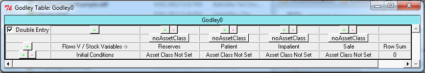
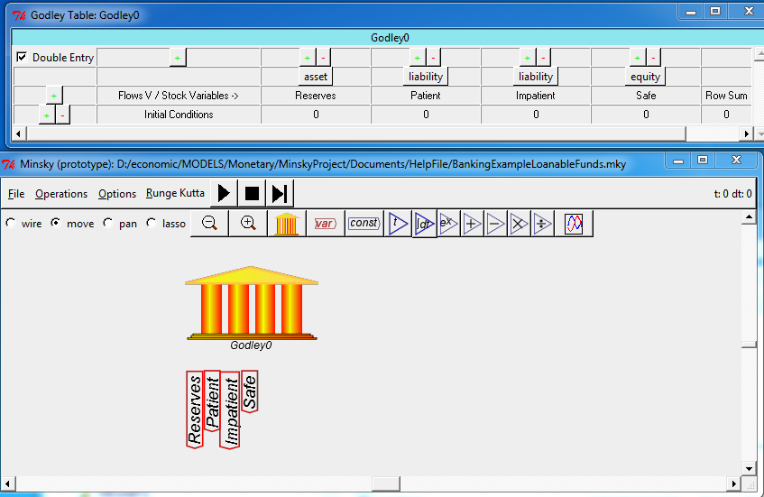

Double click or right click on the  block to bring up the Godley Table:

When a Godley Table is first loaded, it has room for one account to be defined. To create an additional account, click on the  button above the first account. One click then adds another column in which an additional account can be defined.

A column can be deleted by clicking on the  button above the column.
To define bank accounts in the system you enter a name into the row labeled "Flows V / Stock Variables ->". For example, if you were going to define a banking sector that operated simply as an intermediary between "Patient" people and "Impatient" people--as in the Neoclassical "Loanable Funds" model--you might define the following accounts:

As you enter the accounts, they appear at the bottom of the Bank block on the canvas:
